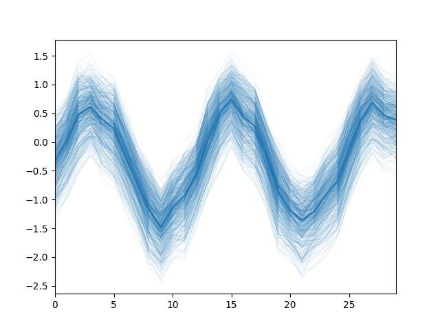

Seaborn example¶
Preview the capture of seaborn styles in plots
# Author: Michael Waskom
# License: BSD 3 clause
from __future__ import division, absolute_import, print_function
import numpy as np
import seaborn as sns
# Enforce the use of default set style
#sns.set(style="darkgrid", palette="Set2")
# Create a noisy periodic dataset
sines = []
rs = np.random.RandomState(8)
for _ in range(15):
x = np.linspace(0, 30 / 2, 30)
y = np.sin(x) + rs.normal(0, 1.5) + rs.normal(0, .3, 30)
sines.append(y)
# Plot the average over replicates with bootstrap resamples
sns.tsplot(sines, err_style="boot_traces", n_boot=500)
Total running time of the script: ( 0 minutes 2.670 seconds)